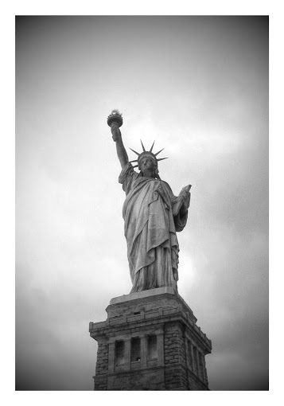

Contacting NYC Destinations

If you are a loyal customer or just looking for more information to help plan your New York experience, we are anxious to hear from you! Please contact our Customer Service Team – we are open every single day of the year to answer any questions you may have or to help you book your reservation by phone.
If you are interested in doing business with us, we would also love to hear from you. Please contact our Business Development team. For advertising opportunities, our experienced and creative Advertising Team is ready to speak with you to help coordinate your next big New York campaign. For editorial questions, submissions, ideas or something you would like to promote, please contact our Editorial team.
We love New York and we love to hear from our visitors – tell us how we’re doing and let’s celebrate the place we call home!